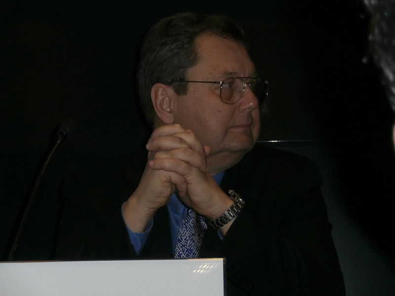

Paul Mockapetris
Paul V. Mockapetris (born 1948 in Boston, Massachusetts, US) is an American computer scientist and Internet pioneer, who, together with Jon Postel, invented the Internet Domain Name System (DNS).
Education
Mockapetris graduated from the prestigious Boston Latin School in 1966, received his bachelor's degrees in physics and electrical engineering from the Massachusetts Institute of Technology in 1971 and his doctorate in information and computer science from the University of California at Irvine in 1982.
Career
In 1983, he proposed a Domain Name System architecture in RFC 882 and RFC 883. He had recognized the problem in the early Internet (then ARPAnet) of holding name to address translations in a single table on a single host, and instead proposed a distributed and dynamic DNS database: essentially DNS as it exists today.
Achievements
Mockapetris is a fellow of the IEEE and the Association for Computing Machinery. He:
- joined the Information Sciences Institute (ISI) of the University of Southern California (USC) in 1978, where he:
- developed the first SMTP email server,
- proposed the DNS architecture in 1983,
- wrote the first DNS implementation (called "Jeeves") for the TOPS-20 in 1983,
- served as director of the high performance computing and communications division;
- was program manager for networking at the Advanced Research Projects Agency (ARPA) of the U.S. Department of Defense from 1990 to 1993;
- served as chair of the Research Working Group of the U.S. Federal Networking Council;
- served as chair of the Internet Engineering Task Force (IETF) from 1994 to 1996;
- was a member of the Internet Architecture Board (IAB) in 1994 and 1995;
- worked for several Internet-related companies: employee number two at @Home (1995–1997), Software.com (1997–1998) (now OpenWave), Fiberlane (now Cisco), Cerent/Siara (now Redback Networks) (1998–1999), Urban Media (1999–2001), and NU Domain (from 1999);
- was Chief Scientist and Chairman of the Board of IP address infrastructure software provider Nominum (1999 to 2016).
- is currently Chief Scientist at ThreatSTOP.
Awards
- 1997 John C. Dvorak Telecommunications Excellence Award "Personal Achievement - Network Engineering" for DNS design and implementation
- 2002 Distinguished Alumnus award from the University of California, Irvine
- 2003 IEEE Internet Award for his contributions to DNS
- 2005 ACM SIGCOMM Award for lifetime contribution to the field of communication networks in recognition of his foundational work in designing, developing and deploying the Domain Name System, and his sustained leadership in overall Internet architecture development
- 2006 ACM SIGCOMM Test of Time Paper Award for co-authoring paper "Development of the Domain Name System"
- 2012 inducted by the Internet Society into the Internet Hall of Fame as an "innovator"
- 2013 Honoris Causa (honorary degree) by Miguel Hernandez University (Alicante, Spain)